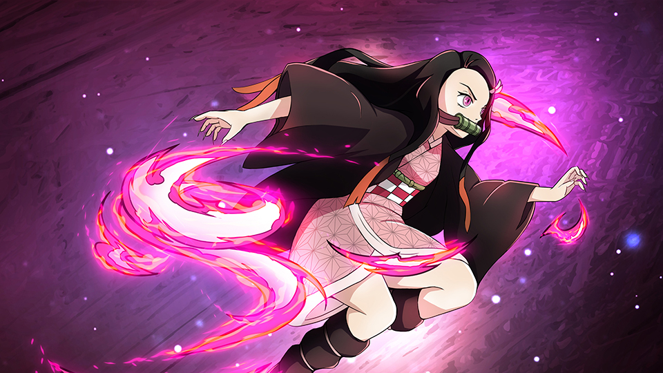

"Demon Slayer: Kimetsu no Yaiba" é uma série de mangá escrita e ilustrada por Koyoharu Gotouge. Foi serializada na revista Weekly Shōnen Jump de fevereiro de 2016 a maio de 2020, com os capítulos coletados em 23 volumes tankōbon. A história gira em torno de Tanjiro Kamado, um jovem gentil e determinado que vende carvão para sustentar sua família. A trama começa quando ele retorna para casa um dia e encontra quase toda a sua família massacrada por um demônio. Sua irmã mais nova, Nezuko, é a única sobrevivente, mas ela foi transformada em um demônio. Tanjiro embarca em uma jornada perigosa para buscar uma cura para Nezuko e vingar sua família, tornando-se um caçador de demônios no processo.
O mangá foi adaptado para uma série de anime produzida pela Ufotable, que estreou em abril de 2019. A primeira temporada foi um sucesso estrondoso tanto de crítica quanto de audiência, elogiada por sua animação de alta qualidade, história emocionante e sequências de luta intensas. O anime também é conhecido por seu uso impressionante de efeitos e música, que complementam a narrativa emocionante e as cenas de batalha.
O filme "Demon Slayer: Mugen Train" foi lançado em outubro de 2020 e cobre o "Arco do Trem Infinito", atuando como uma ponte entre a primeira e a segunda temporada da série. O filme bateu vários recordes de bilheteria e se tornou um dos filmes de maior sucesso de todos os tempos no Japão e em todo o mundo.
A segunda temporada, lançada em 2021, seguiu o "Arco do Distrito do Entretenimento" e continuou o alto padrão de qualidade estabelecido pela primeira temporada e pelo filme, desenvolvendo ainda mais o mundo e os personagens da série.
"Demon Slayer" também gerou uma gama de mercadorias, desde jogos até novelas leves e uma variedade de produtos. A franquia continua a ser incrivelmente popular em todo o mundo, e sua influência na cultura pop e na comunidade de anime é imensa. A história é frequentemente elogiada por sua profundidade emocional, desenvolvimento de personagens, valores temáticos de perseverança e família, e por trazer uma nova vida ao gênero shōnen.